ADVANCED TRAUMA LIFE SUPPORT (ATLS)
Initial Assessment and Management of the Trauma Patient- ATLS
Epidemiology
Trimodal Distribution of Trauma Deaths
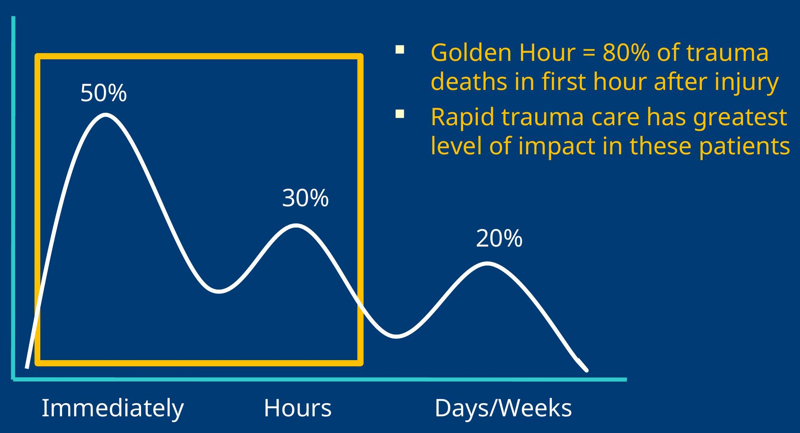History of Trauma System Development
- Standardized Trauma Assessment
- Nebraska Cornfield, 1976
- Orthopedic Surgeon
- Lead to development of ATLS
- Trauma Systems Development
- First developed my military in wartime
- i.e. MASH Units
- Expanded to Level 1,2,3 Trauma Centers
- Urban Systems
- Statewide networks of systems/Refferal systems
- Level 1 - Highest level of care, Leaders in research, clinical care and education
- Level 2 - Provides definitive care in wide range of complex traumatic patients
- Level 3 - Provides initial stabilization and treatment. May care for uncomplicated trauma patients
- Level 4 - Provides initial stabilization and transfers all trauma patients for definitive care
- WHERE ARE WE IN KENYA?????
Mechanisms of Injury
Blunt Trauma
- Compression Forces
- Cells in tissues are compressed and crushed
- E.g. Spleen
- Shear Forces
- Acceleration/Deceleration Injury
- E.g. Aorta
- Shearing force = Spectrum from Full thickness tear (Exsanguination) to Partial tear (Pseudoaneurysm)
- Overpressure
- Body cavity compressed at a rate faster than the tissue around it, resulting in rupture of the closed space
- E.g. Plastic bag
- E.g. in trauma = diaphragmatic rupture, bladder injury
Collision Types
- Frontal Impact Collisions
- Lateral Impact Collisions (T bone)
- Rear Impact Collisions
- Rollover Mechanism
- Open Vehicle or Motorcycle/Moped
- Pedestrian Vs. Car
- Penetrating Injury (Guns vs. Knives)
Basics of Trauma Assessment
- Preparation
- Team Assembly
- Equipment Check
- Triage
- Sort patients by level of acuity (SATS)
- Primary Survey
- Designed to identify injuries that are immediately life threatening and to treat them as they are identified
- Resuscitation
- Rapid procedures and treatment to treat injuries found in primary survey before completing the secondary survey
- Secondary Survey
- Full History and Physical Exam to evaluate for other traumatic injuries
- Monitoring and Evaluation, Secondary adjuncts
- Transfer to Definitive Care
- ICU, Ward, Operating Theatre, Another facility
Preparation . . .

Primary Survey
Airway and Protection of Spinal Cord
Breathing and Ventilation
Circulation
Disability
Exposure and Control of the Environment
Key Principles
- When you find a problem during the primary survey, FIX IT.
- If the patient gets worse, restart from the beginning of the primary survey
- Some critical patients in the Emergency Department may not progress beyond the primary survey
Airway and Protection of Spinal Cord
Why first in the algorithm?
- Loss of airway can result in death in < 3 minutes
- Prolonged hypoxia = Inadequate perfusion, End-organ damage
Airway Assessment
- Vital Signs = RR, O2 sat
- Mental Status = Agitation, Somnolent, Coma
- Airway Patency = Secretions, Stridor, Obstruction
- Traumatic Injury above the clavicles
- Ventilation Status = Accessory muscle use, Retractions, Wheezing
Clinical Pearls
- Patients who are speaking normally generally do not have a need for immediate airway management
- Hoarse or weak voice may indicate a subtle tracheal or laryngeal injury
- Noisy Respirations frequently indicates an obstructed respiratory pattern
Airway Interventions
Maintenance of Airway Patency
- Suction of Secretions
- Chin Lift/Jaw thrust
- Nasopharyngeal Airway
- Definitive Airway
Airway Support
- Oxygen
- NRBM (100%)
- Bag Valve Mask
- Definitive Airway
Definitive Airway
- Endotracheal Intubation
- In-line cervical stabilization
- Surgical Crichothyroidotomy

Protection of Spinal Cord
General Principle: Protect the entire spinal cord until injury has been excluded by radiography or clinical physical exam in patients with potential spinal cord injury.
Spinal Protection
- Rigid Cervical Spinal Collar = Cervical Spine
- Long rigid spinal board or immobilization on flat surface such as stretcher = T/L Spine
Etiology of Spinal Cord Injury
- Road Traffic Accidents (47%)
- High energy falls (23%)
Clinical Pearls
- Treatment (Immobilization) before diagnosis
- Return head to neutral position
- Do not apply traction
- Diagnosis of spinal cord injury should not precede resuscitation
- Motor vehicle crashes and falls are most commonly associated with spinal cord injuries
- Main focus = Prevention of further injury
Cervical spine Immobilization
- Return head to neutral position
- Maintain in-line stabilization
- Correct size collar application
- Blocks/tape
- Sandbags

Source: www.ossur.com/bracesandsupports/neckandspine/prehospit...oncollars/phillyblockhead Accessed 9/20/09 Yahoo Images
Breathing and Ventilation
General Principle: Adequate gas exchange is required to maximize patient oxygenation and carbon dioxide elimination
Breathing/Ventilation Assessment:
- Exposure of chest
- General Inspection
- Tracheal Deviation
- Accessory Muscle Use
- Retractions
- Absence of spontaneous breathing
- Paradoxical chest wall movement
- Auscultation to assess for gas exchange
- Equal Bilaterally
- Diminished or Absent breath sounds
- Palpation
- Deviated Trachea
- Broken ribs
- Injuries to chest wall
Identify Life Threatening Injuries
Tension Pneumothorax
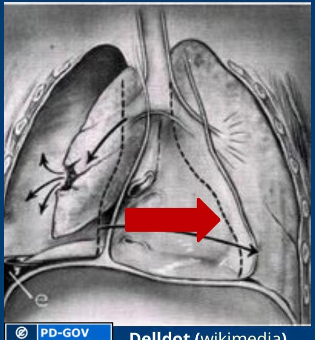Air trapping in the pleural space between the lung and chest wall. Sufficient pressure builds up and pressure to compress the lungs and shift the mediastinum.

Physical exam
- Absent breath sounds
- Air hunger
- Distended neck veins
- Tracheal shift
Treatment
- Needle Decompression
- 2nd Intercostal space, Midclavicular line
- Tube Thoracostomy
- 5th Intercostal space, Anterior axillary line
Hemothorax
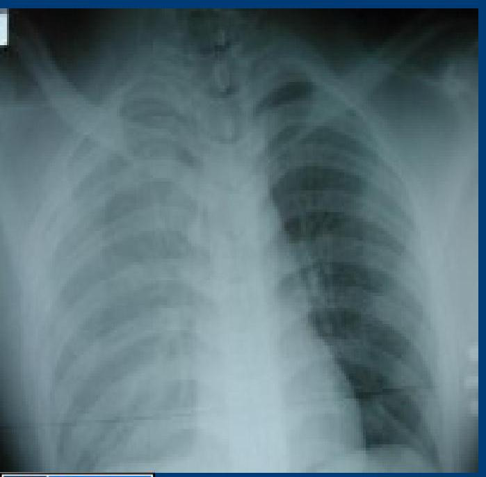Blood collecting in the pleural space and is common after penetrating and blunt chest trauma.
Source of bleeding = Lung, Chest wall (intercostal arteries), heart, great vessels (Aorta), Diaphragm
Physical Exam
- Absent or diminished breath sounds
- Dullness to percussion over chest
- Hemodynamic instability
Treatment = Large Caliber Tube Thoracostomy
10-20% of cases will require Thoracotomy for control of bleeding
Flail Chest
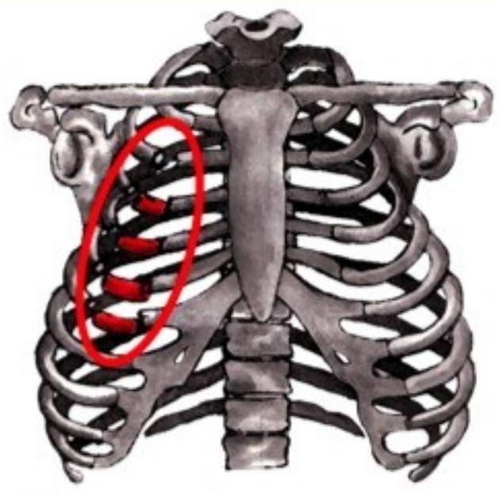Direct injury to the chest resulting in an unstable segment of the chest wall that moves separately from remainder of thoracic cage.
- Typically results from two or more fractures on 2 or more ribs
- Typically Accompanied by a pulmonary contusion
Physical Exam = Paradoxical movement of chest segment
Treatment = Improve Abnormalities in gas exchange
- Early Intubation for patients with respiratory distress
- Avoidance of overaggressive fluid resuscitation
Open Pneumothorax

- Sucking Chest Wound
- Large defect of chest wall
- Leads to rapid equilibration of atmospheric and intrathoracic pressure
- Impairs oxygenation and ventilation
Initial Treatment
- Three Sided occlusive dressing
- Provides a flutter valve effect
- Chest tube placement remote to site of wound
- Avoid complete dressing, will create a tension pneumothorax
Needle Thoracostomy

Needle Thoracostomy
- Midclavicular line
- 14 guage angiocath
- Over the 2nd rib
- Rush of air is heard
Tube Thoracostomy

Insertion site
- 5th intercostal space,
- Anterior axillary line
- Sterile prep, anesthesia with lidocaine
- 2-3 cm incision along rib margin with #10 blade
- Dissect through subcutaneous tissues to rib margin
- Puncture the pleura over the rib
- Advance chest tube with clamp and direct posteriorly and apically
- Observe for fogging of chest tube, blood output
- Suture the tube in place

Complications of Chest Tube Placement
- Injury to intercostal nerve, artery, vein
- Injury to lung
- Injury to mediastinum
- Infection
- Allergic reaction to lidocaine
- Inappropriate Placement of chest tube
Circulation
Shock
- Impaired tissue perfusion
- Tissue oxygenation is inadequate to meet metabolic demand
- Prolonged shock state leads to multiorgan system failure and cell death
Clinical Signs of Shock
- Altered mental status
- Tachycardia (HR > 100) = Most common sign
- Arterial Hypotension (SBP < 120)
- Femoral Pulse - SBP > 80
- Radial Pulse - SBP > 90
- Carotid Pulse - SBP > 60
- Inadequate Tissue Perfusion
- Pale skin color
- Cool clammy skin
- Delayed cap refill (> 3 seconds)
- Altered LOC
- Decreased Urine Output (UOP < 0.5 mL/kg/hr)
Types of Shock in Trauma
- Hemorrhagic
- Assume hemorrhagic shock in all trauma patients until proven otherwise
- Results from Internal or External Bleeding
- Obstructive
- Cardiac Tamponade
- Tension Pneumothorax
- Neurogenic
- Spinal Cord injury
Sources of Bleeding
- Chest
- Abdomen
- Pelvis
- Bilateral Femur Fractures
Emergency Nursing Treatment
- Two Large IV Lines
- Cardiac Monitor
- Blood Pressure Monitoring
General Treatment Principles
- Stop the bleeding
- Apply direct pressure
- Temporarily close scalp lacerations
- Close open-book pelvic fractures
- Abdominal pelvic binder/bedsheet
- Restore circulating volume
- Crystalloid Resuscitation (2L)
- Administer Blood Products
- Immobilize fractures
- Responders vs. Nonresponders
- Transient Response to volume resuscitation = sign of ongoing blood loss
- Nonresponders = Consider other source for shock state or operating room for control of massive hemorrhage
Pericardial Tamponade
Pericardium or sac around heart fills with blood due to penetrating or blunt injury to chest.
Beck's Triad
- Distended jugular veins
- Hypotension
- Muffled Heart Sounds
Treatment
- Rapid evacuation of pericardial space
- Performed through a Pericardiocentesis (temporizing measure)
- Open Thoracotomy
Pericardiocentesis
- Puncture the skin 1-2 cm inferior to xiphoid process
- 45/45/45 degree angle
- Advance needle to tip of left scapula
- Withdraw on needle during advance of needle
- Preferable under ultrasound guidance or EKG lead V attachment
Complications
- Aspiration of ventricular blood
- Laceration of coronary arteries, veins, epicardium/myocardium
- Cardiac arrhythmia
- Pneumothorax
- Puncture of esophagus
- Puncture of peritoneum

A word about cardiac arrest . . .

Care of the trauma patient in cardiac arrest
- CPR
- Bilateral Tube Thoracostomy
- Pericardiocentesis
- Volume Resuscitation
- Traumatic Cardiac Arrest due to blunt injury has very low survival rate (< 1%)
- No point for emergency thoracotomy
- Selected cases of cardiac arrest due to penetrating traumatic injury may benefit from emergent thoracotomy
- Pericardial tamponade
- Cross clamp Aorta
Disability
Baseline Neurologic Exam
- Pupillary Exam
- Dilated pupil - suggests transtentorial herniation on ipsilateral side
- AVPU Scale
- Alert
- Responds to verbal stimulation
- Responds to pain
- Unresponsive
- Gross Neurological Exam - Extremity Movement
- Equal and symmetric
- Normal gross sensation
- Glasgow Coma Scale: 3-15
- Rectal Exam
- Normal Rectal Tone
- Note: If intubation prior to neuro assessment, consider quick neuro assessment to determine degree of injury
Glasgow Coma Scale
GCS ≤ 8 Intubate
- Eye
- Spontaneously opens 4
- To verbal command 3
- To pain 1
- No response
- Best Motor Response
- Obeys verbal commands 6
- Localizes to pain 5
- Withdraws from pain 4
- Flexion to pain (Decorticate Posturing) 3
- Extension to pain (Decerebrate Posturing) 2
- No response 1
- Verbal Response
- Oriented/Conversant 5
- Disoriented/Confused 4
- Inappropriate words 3
- Incomprehensible words 2
- No response 1
Key Principles
- Precise diagnosis is not necessary at this point in evaluation
- Prevention of further injury and identification of neurologic injury is the goal
- Decreased level of consciousness = Head injury until proven otherwise
- Maintenance of adequate cerebral perfusion is key to prevention of further brain injury
- Adequate oxygenation
- Avoid hypotension
- Involve neurosurgeon early for clear intracranial lesions
Cervical Spinal Clearance
- Patients must be alert and oriented to person, place and time
- Not clinically intoxicated with alcohol or drugs
- Non-tender at all spinous processes
- No focal neurological deficits
- No distracting injuries
- Painless range of motion of neck
Exposure
- Remove all clothing
- Examine for other signs of injury
- Injuries cannot be diagnosed until seen by provider
- Logroll the patient to examine patient's back
- Maintain cervical spinal immobilization
- Palpate along thoracic and lumbar spine
- Minimum of 3 people, often more providers required
- Avoid hypothermia
- Apply warm blankets after removing clothes
- Hypothermia = Coagulopathy
- Increases risk of hemorrhage
 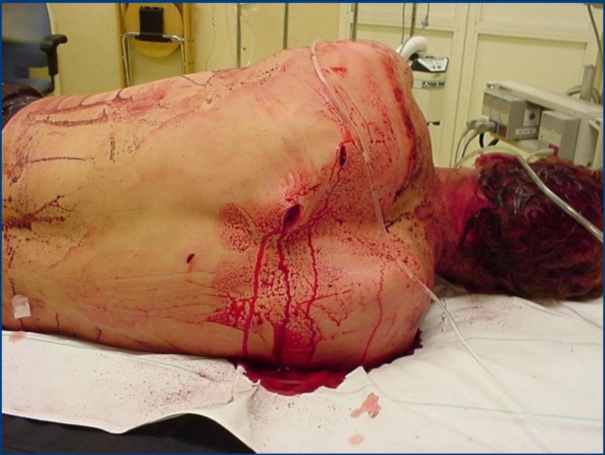
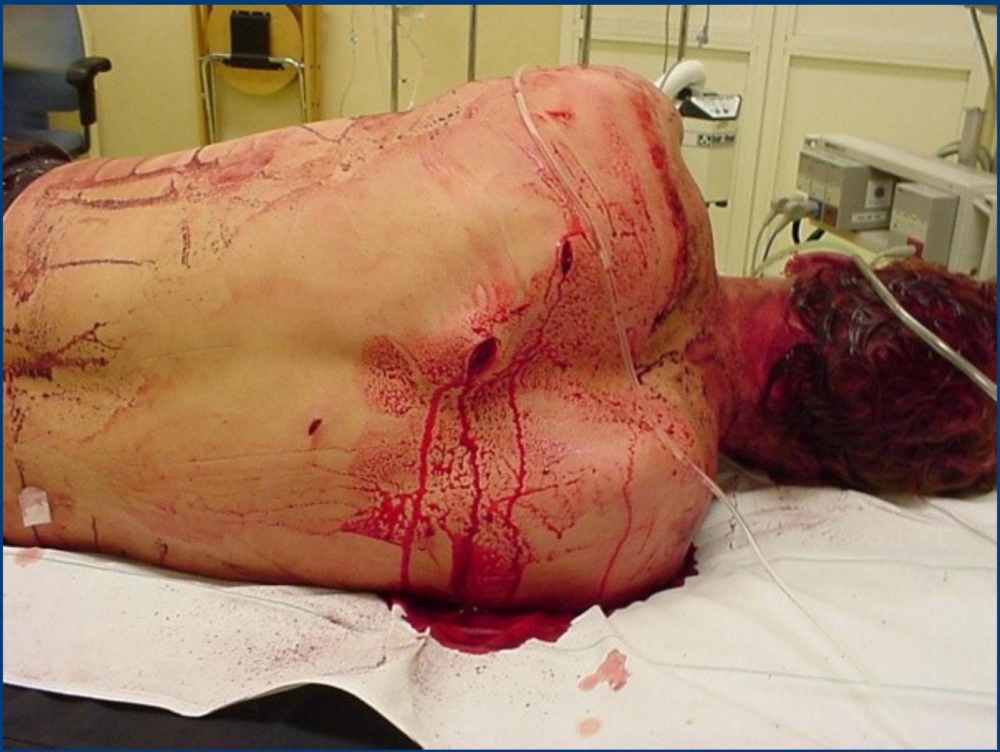
Trauma Logroll
- One person = Cervical Spine
- Two people = Roll main body
- One person = Inspect back and palpate spine
Secondary Survey
- Secondary Survey is completed after primary survey is completed and patient has been adequately resuscitated.
- No patient with abnormal vital signs should proceed through a secondary survey
- Secondary Survey includes a brief history and complete physical exam
History
AMPLE History
- Allergies
- Medications
- Past Medical History, Pregnancy
- Last Meal
- Events surrounding injury, Environment
History may need to be gathered from family members or ambulance service
Physical Exam
- Head/HEENT
- Neck
- Chest
- Abdomen
- Pelvis
- Genitourinary
- Extremities
- Neurologic
Difficult Airway

Seatbelt sign

Signs of Head and Abdominal Injury
Battle Sign
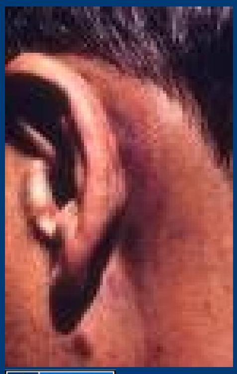Raccoon's Eyes

Cullen's Sign

Grey-Turner Sign

H. L. Fred and H.A. van Dijk Wikimedia)
Adjuncts to Secondary Survey
- Radiology
- Standard emergent films
- C-spine, CXR, Pelvis
- Focused Abdominal Sonography in Trauma (FAST)
- Additional films
- Cat scan imaging
- Angiography
- Standard emergent films
- Foley Catheter
- Blood at urethral meatus = No Foley catheter
- Pain Control
- Tetanus Status
- Antibiotics for open fractures
Trauma in Special Populations
Pregnancy
- Supine Hypotensive Syndrome
- After 20 weeks, enlarged uterus with fetus and amniotic fluid compresses inferior vena cava
- Decreases venous return and decrease cardiac output
- Keep pregnant patients in left lateral decubitus position to avoid excessive hypotension
- Optimal maternal and fetal outcome is determined by adequate resuscitation of mother
- Fetal Monitoring
Pediatric Trauma Resuscitation
- Differences in head to body ratio and relative size and location of anatomic features make children more susceptible to head injury, abdominal injury
- Underdeveloped anatomy leads to chest pliability and less protection of thoracic cage
- Cardiac Arrest
- Typically result from respiratory arrest degrading into cardiac arrest
- Resuscitation
- Broselow Tape
- ABCDE
Classic Radiographical Findings
Pelvic Fracture
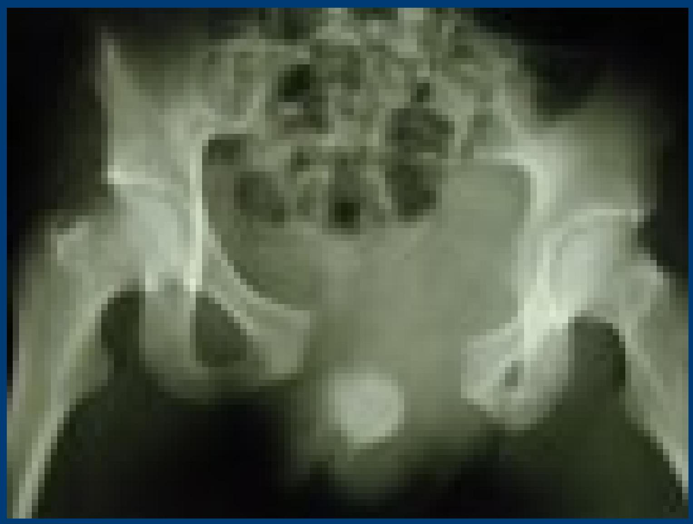Femur Fracture

Intracranial Hemorrhage
Epidural Hematoma
Middle Meningeal Artery
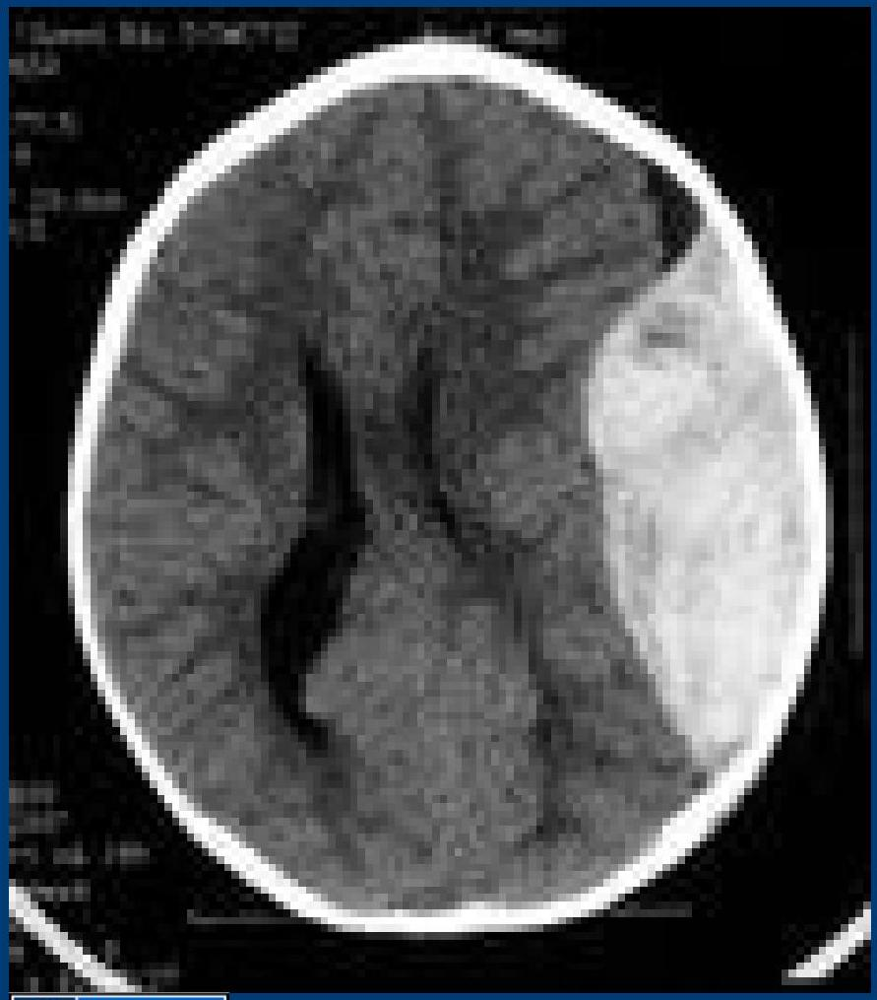Subdural Hematoma
Bridging Veins
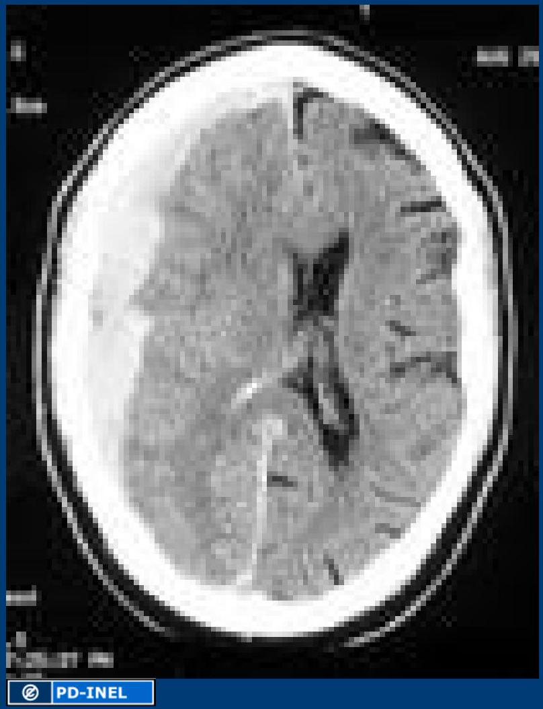Diaphragmatic Rupture with spleen herniation®
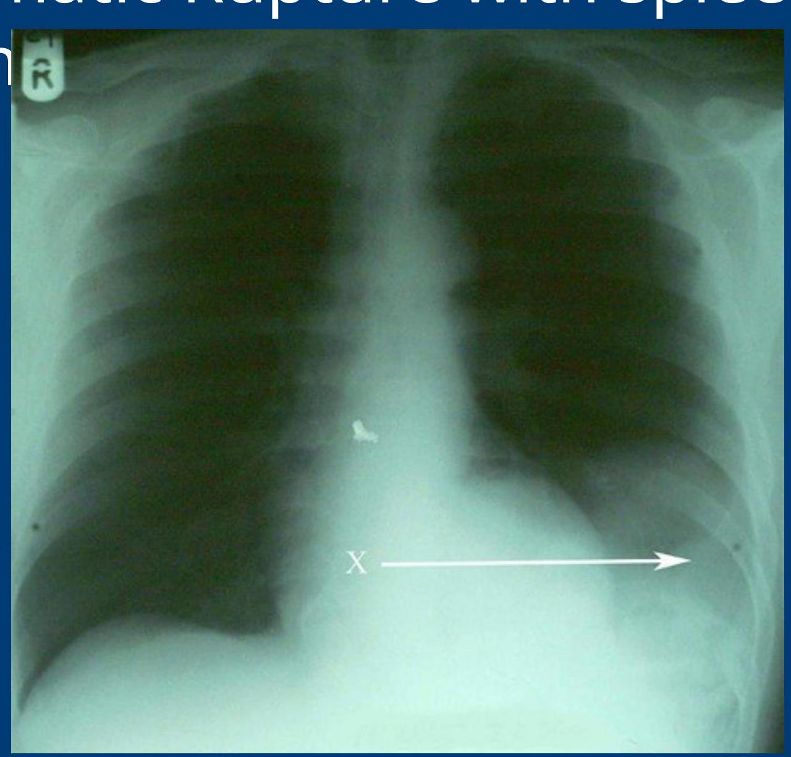Widened Mediastinum - Aortic Injury
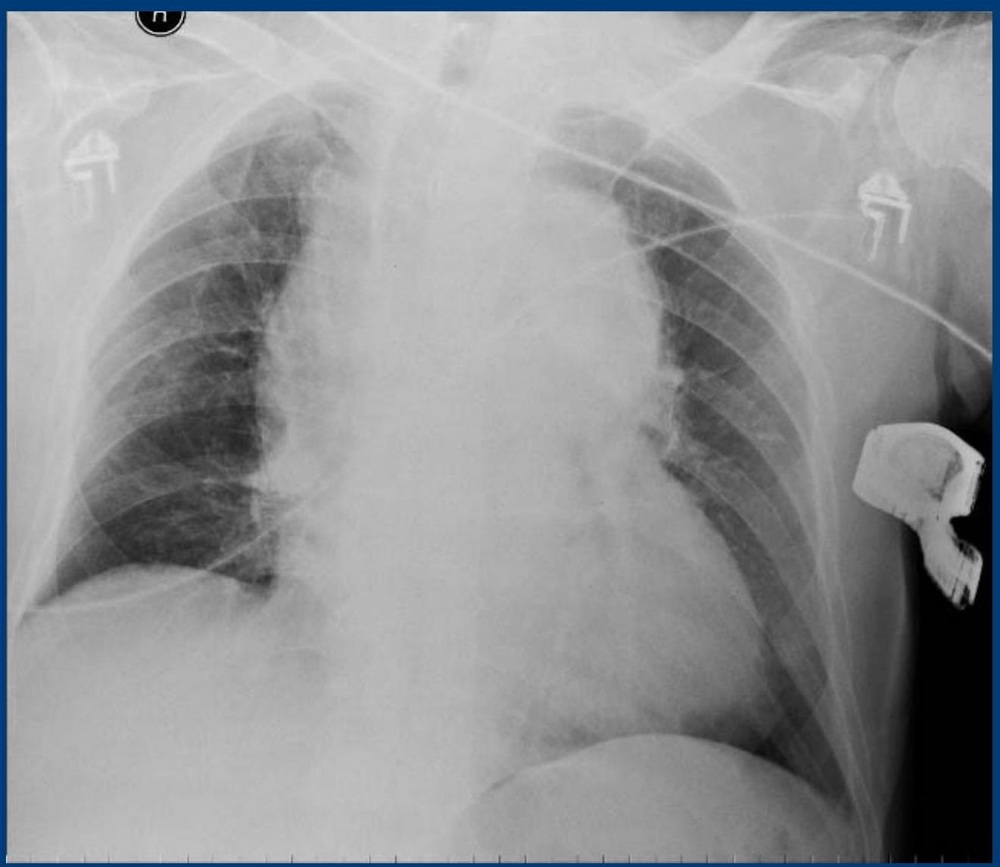Definitive Care
- Secondary Survey followed by radiographic evaluation
- CatScan
- Consultation
- Neurosurgery
- Orthopedic Surgery
- Vascular Surgery
- Transfer to Definitive Care
- Operating Room
- ICU
- Higher level facility
Case Example
Mr. Jones - 45 yr male involved in a rollover road traffic accident and was ejected from the vehicle. Patient was unrestrained. Patient was not ambulatory on scene of accident and is brought into trauma bay for evaluation.

What concerns you about story?
First Steps of Evaluation and Management
Exam
- Awake, diaphoretic
- Pulse = 120
- BP = 90/60
- RR = 18
- O2 sat = 94%
What do you want to do next?
Primary Survey
- Awake, alert, talking to provider
- Breathing
- Absent breath sounds on left
What do you want to do next?
- Circulation
- Vital Signs?
- Access?
- Resuscitation?
- IV/O2/Monitor
- Disability
- GCS = 14
- Exposure
Intervention & Reassessment
- Chest tube placed
- Rush of air heard consistent with pneumothorax
- Repeat Vital Signs
- Pulse 120
- BP 80/40
- RR = 15
- O2 sat = 99% NRBM
What do you want to do next?
- Patient complaining of abdominal pain
- Ecchymosis noted over left flank
- Resuscitation?
Definitive Care
- Blood Product Administration
- Transfer to definitive care = Operating Theatre
Conclusion
- Assessment of the trauma patient is a standard algorithm designed to ensure life threatening injuries do not get missed
- Primary Survey + Resuscitation
- Airway
- Breathing
- Circulation
- Disability
- Exposure
- Secondary Survey
- Definitive Care